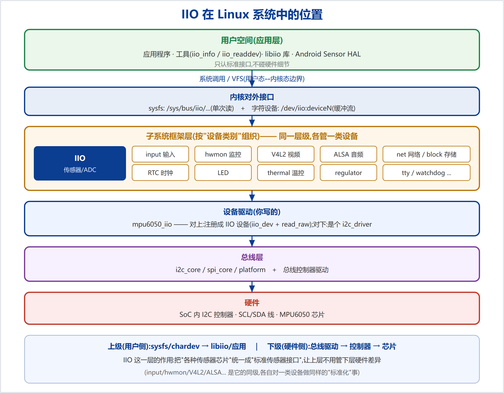

IIO 处在内核的"子系统框架层":在"总线层(i2c/spi)之上、用户接口(sysfs/字符设备)之下"。它把"各种各样的传感器芯片"统一成"标准传感器接口",让上层应用不用管下层硬件差异。
IIO 是"按设备类别组织"的众多子系统之一。每个子系统给一类设备做同样的"标准化"的事:
| 子系统 | 管哪类设备 | 对外接口举例 |
|---|---|---|
| IIO | 传感器 / ADC / DAC(加速度、光、温度…) | /sys/bus/iio、/dev/iio:deviceN |
| input | 按键、触摸、鼠标键盘 | /dev/input/eventX |
| hwmon | 温度/电压/风扇监控 | /sys/class/hwmon |
| V4L2 | 摄像头 / 视频 | /dev/videoN |
| ALSA | 音频(声卡) | /dev/snd/* |
| RTC | 实时时钟 | /dev/rtcN |
| LED / thermal / regulator / watchdog / tty / net / block … | 灯 / 温控 / 电源 / 看门狗 / 串口 / 网络 / 存储 | 各自的 /sys 或 /dev 接口 |
| 方向 | 是谁 | 关系 |
|---|---|---|
| 上级(用户侧) | sysfs(/sys/bus/iio)+ 字符设备(/dev/iio:deviceN)→ libiio 库 → 应用程序 / Android Sensor HAL | IIO 把数据"标准化地"交给它们;它们不碰硬件 |
| 下级(硬件侧) | 总线驱动(i2c_driver/spi_driver/platform)→ 总线核心(i2c_core…)→ 总线控制器驱动 → 芯片 | IIO 驱动借总线去读写具体芯片(如用 regmap 走 I2C) |
所以你的 mpu6050_iio 驱动是一座桥:对上注册成 IIO 设备(iio_dev + read_raw),对下是个 i2c_driver(走 I2C 读芯片)。
分工:核心(内核写)+ 驱动(你写)。
drivers/iio/industrialio-*.c):注册 iio 总线/类;提供 sysfs 的 show/store、字符设备 fops(iio_buffer_fileops)、缓冲(kfifo)、触发(trigger)、事件(event)等通用机制;在用户访问时回调驱动。struct iio_dev(通道 + 回调表),调 iio_device_register 注册;核心据此自动生成属性文件,并在被读写时回调你的 read_raw/write_raw。关键数据结构(把它们当"填空表"):
| 结构体 | 作用 |
|---|---|
struct iio_dev | 一个 IIO 设备的句柄(name/modes/info/channels + 私有数据) |
struct iio_chan_spec | 描述一个通道:类型/方向/提供哪些量(raw/scale)/扫描信息 |
struct iio_info | 回调表:read_raw / write_raw / read_avail / 事件回调… |
struct iio_buffer / iio_trigger | 进阶:缓冲流 + 触发(中断/定时驱动的数据流) |
数据流:cat in_accel_x_raw → 核心的 iio_read_channel_info → 回调你的 read_raw(chan, mask) → 你 regmap 读芯片 → 返回 → 核心格式化给用户。(字符设备/缓冲路径类似,由核心的 fops 驱动。)
| 层次 | 内容 | 你的状态 |
|---|---|---|
| 必会 | iio_dev 分配/注册(devm_iio_device_alloc/register)、iio_chan_spec 通道定义、iio_info 的 read_raw/write_raw、scale/offset 约定、sysfs 读法 | ✅ 已亲手实现 |
| 进阶 | 触发缓冲(triggered buffer)、trigger、events(阈值中断)、硬件 FIFO 水位、scan_elements/缓冲数据格式 | 待学(生产级那套) |
| 周边(配合 IIO) | regmap、设备树(compatible/of_match)、总线模型(i2c/spi)、并发(锁)、电源管理(runtime PM) | 大部分已懂 ✅ |
| 面试角度 | 能讲清:IIO 是什么、在系统哪层、和 V4L2 的关系、数据流、为什么用子系统(标准化/复用/解耦) | 本文即答案 |
drivers/iio/ 下同类驱动(如 inv_mpu6050)是最好的进阶教材。本文为 Linux IIO 框架的体系化介绍。配套代码examples/learning-driver/;系列文档见docs/learning/。仓库:github.com/fyy0619-cell/xiangmu